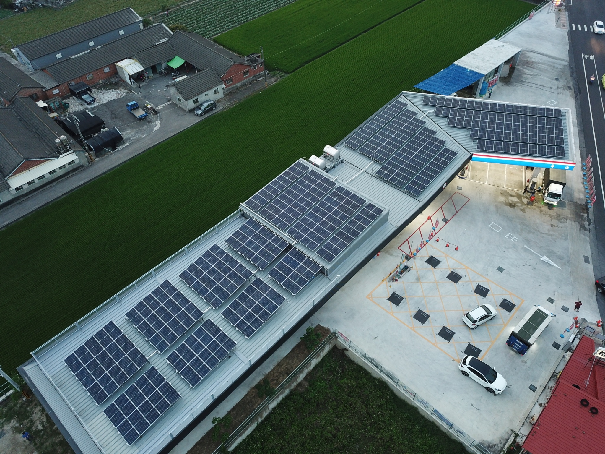
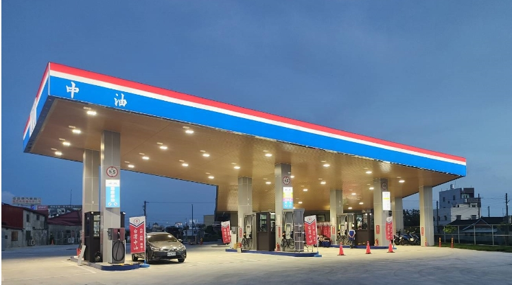
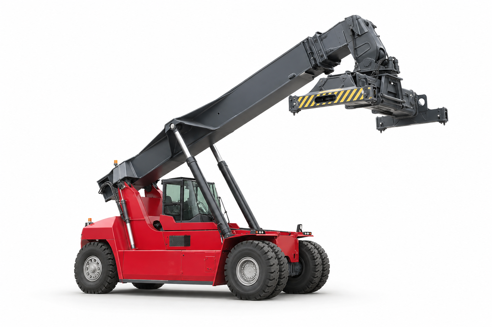

世新貨櫃企業股份有限公司
成立於1986年，主力於空櫃儲轉及貨櫃維修清洗服務。
擁有優質的空櫃儲放管理系統，累積經驗豐富的驗櫃技術和維修專業團隊，卓越的業績和專業的服務，世新貨櫃多次獲得全球最佳櫃場之殊榮。
服務項目
- 貨櫃之修理與保養業務
- 貨櫃之噴砂、除銹、噴漆、清洗業務
- 貨櫃車架之整修
- 其他與貨櫃修理有關業務之經營
聯絡資訊
世新業務部
電話：07-813-7961
地址：高雄市小港區東亞路2號


服務品質肯定


成立於1986年，主力於空櫃儲轉及貨櫃維修清洗服務。
擁有優質的空櫃儲放管理系統，累積經驗豐富的驗櫃技術和維修專業團隊，卓越的業績和專業的服務，世新貨櫃多次獲得全球最佳櫃場之殊榮。
世新業務部
電話：07-813-7961
地址：高雄市小港區東亞路2號
油品質純 綠能永續
2001年起，亞太事業跨足油品市場，並成功開設第一座加油站「亞柏小港站」，更曾締造全台柴油發油量之冠。
2016年正式成立「亞柏油品事業股份有限公司」，除了油品銷售外，亞柏油品持續朝多元化的服務方向發展。
近年來，我們更以友善環境和綠能永續的概念，積極在全台設立新站點，其中綠能加油站「亞柏西螺站」於2022年正式啟用。



亞柏油品將繼續致力於提供優質的油品銷售及多元化的服務，以綠能永續為目標，秉持著友善環境的理念，為客戶提供更便利、更可持續的能源服務體驗。
運動 休閒 聯誼 多元化優質環境
亞太員工是公司最重要的資產，因此員工福利一直是公司極為重視的一環，同時也將作為亞柏羽球隊的訓練基地。為此，2011年員工綜合運動休閒中心啟用，正式命名為「亞柏會舘」。
亞柏會舘除了為亞太公司及關係企業的員工及其親友提供休閒、娛樂和社交聯誼的場所外，也開放給社會各界舉辦文化、展覽、羽球比賽等活動使用。
地址：高雄市小港區學府路113號
電話：07-8027698


台灣羽球戰將 放眼國際賽場
2009年，亞太國際物流集團正式揮拍進軍羽壇，是民間企業所成立的第一支專業羽球隊。我們致力於年輕球員的培育，締造了亞運男子團體銅牌、亞洲青少年男子單打二屆冠軍及多項國內外羽球大賽的金牌殊榮。


深入新聞，秒懂台灣，秒懂全世界
《太報》於2017年誕生，2018年正式登記成立太報文化事業股份有限公司，以跳脫傳統台灣新聞媒體的框架為初衷，旨在替社會發聲並帶來人文溫度。
太報 TaiSounds 堅持公正的報導立場，追求以深度、解釋性的視角進行報導，關注台灣與國際即時新聞、政治財經、社會議題、體育與文化娛樂。
前往太報官網（開啟新分頁）
45年港口機具保養維修經驗，代理振華柴油堆高機、電動堆高機、電動拖車、陜汽重卡、各式零組件、板台、特殊大型機具銷售及保固維修服務。
台灣營銷處：亞太港機經銷部
電話：07-813-7856

